전자기사 (2009-05-10 기출문제)
1과목: 전기자기학
1. 전류 4π[A]가 흐르고 있는 무한직선도체에 의해 자계가 4[A/m]인 점은 직선도체로부터 거리가 몇 [m] 인가?
- 0.5[m]
- 1[m]
- 3[m]
- 4[m]
(정답률: 알수없음)

2. 비유전율 εS = 80, 비투자율 μS = 1인 전자파의 고유임피던스는 약 몇 [Ω] 인가?
- 21[Ω]
- 42[Ω]
- 80[Ω]
- 160[Ω]
(정답률: 알수없음)
3. 도체나 반도체에 전류를 흘리고 이것과 직각방향으로 자계를 가하면 이 두 방향과 직각 방향으로 기전력이 생기는 현상을 무엇이라 하는가?
- 핀치 효과
- 볼타 효과
- 압전 효과
- 홀 효과
(정답률: 알수없음)
4. 정전용량이 1[μF]인 공기콘덴서가 있다. 이 콘덴서 판간의 1/2인 두께를 갖고 비유전율 εr = 2 인 유전체를 그 콘덴서의 한 전극면에 접촉하여 넣었을 때 전체의 정전용량은 몇 [μF]이 되는가?
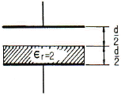
- 2[μF]
- 1/2[μF]
- 4/3[μF]
- 5/3[μF]
(정답률: 알수없음)
5. 다음 중 강자성체가 아닌 것은?
- 코발트
- 니켈
- 철
- 구리
(정답률: 알수없음)
6. 200[V] 30[W]인 백열전구와 200[V] 60[W]인 백열전구를 직렬로 접속하고, 200[V]의 전압을 인가하였을 때 어느 전구가 더 어두운가? (단, 전구의 밝기는 소비전력에 비례한다.)
- 둘 다 같다.
- 30[W] 전구가 60[W] 전구보다 더 어둡다.
- 60[W] 전구가 30[W] 전구보다 더 어둡다.
- 비교할 수 없다.
(정답률: 알수없음)
7. 압전기 현상에서 분극이 응력에 수직한 방향으로 발생하는 현상은?
- 종효과
- 횡효과
- 역효과
- 직접효과
(정답률: 알수없음)
8. 단면적 s[m2], 단위 길이에 대한 권수가 n[회/m]인 무한히 긴 솔레노이드의 단위 길이당의 자기인덕턴스[H/m]는 어떻게 표현되는가?
- μㆍsㆍn
- μㆍsㆍn2
- μㆍs2ㆍn2
- μㆍs2ㆍn
(정답률: 알수없음)
9. 그림과 같이 무한히 긴 두 개의 직선상 도선이 1[m] 간격으로 나란히 놓여 있을 때 도선 ①에 4[A], 도선 ②에 8[A]가 흐르고 있을 때 두 선간 중앙점 P에 있어서의 자계의 세기는 몇 [A/m] 인가? (단, 지면의 아래쪽에서 위쪽으로 향하는 방향을 정(+)으로 한다.)
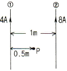
- 4/π
- 12/π
- -4/π
- -5/π
(정답률: 알수없음)
10. 질량 m = 10-10[kg]이고 전하량 q = 10-8[C]인 전하가 전기장에 의해 가속되어 운동하고 있다. 이 때 가속도 a = 102i+103j [m/sec2]라 하면 전기장의 세기 E는 몇 [V/m] 인가?
- E = 104i+105j
- E = i+10j
- E = 10-2i+10-7j
- E = 10-6i+10-5j
(정답률: 알수없음)
11. 전계의 실효치가 377[V/m]인 평면전자파가 진공을 진행하고 있다. 이 때 이 전자파에 수직되는 방향으로 설치된 단면적 10[m2]의 센서로 전자파의 전력을 측정하려고 한다. 센서가 1[W]의 전력을 측정했을 때 1[mA]의 전류를 외부로 흘려준다면 전자파의 전력을 측정했을 때 외부로 흘려주는 전류는 몇 [mA] 인가?
- 3.77[mA]
- 37.7[mA]
- 377[mA]
- 3770[mA]
(정답률: 알수없음)
12. 정전계와 반대방향으로 전하를 2[m] 이동시키는데 240[J]의 에너지가 소모되었다. 이 두점 사이의 전위차가 60[V]이면 전하의 전기량은 몇 [C] 인가?
- 1[C]
- 2[C]
- 4[C]
- 8[C]
(정답률: 알수없음)
13. 10[mm]의 지름을 가진 동선에 50[A]의 전류가 흐를 때 단위 시간에 동선의 단면을 통과하는 전자의 수는 약몇 개인가?
- 7.85×1016
- 20.45×1015
- 31.25×1019
- 50×1019
(정답률: 알수없음)
14. 다음 설명 중 잘못된 것은?
- 초전도체는 임계온도 이하에서 완전 반자성을 나타낸다.
- 자화의 세기는 단위 면적당의 자기 모멘트이다.
- 상자성체에 자극 N극을 접근시키면 S극이 유도된다.
- 니켈(Ni), 코발트(Co) 등은 강자성체에 속한다.
(정답률: 알수없음)
15. 코일 A 및 코일 B가 있다. 코일 A의 전류가 1/30초간에 10[A] 변화할 때 코일 B에 10[V]의 기전력을 유도한다고 한다. 이 때의 상호인덕턴스는 몇 [H] 인가?
- 1/0.3
- 1/3
- 1/30
- 1/300
(정답률: 알수없음)
16. 직교하는 도체평면과 점전하 사이에는 몇 개의 영상전하가 존재하는가?
- 2
- 3
- 4
- 5
(정답률: 알수없음)
17. 도전률이 5.8×107[℧/m], 비투자율이 1인 구리에 50[Hz]의 주파수를 갖는 전류가 흐를 때, 표피두께는 약 몇 [mm] 인가?
- 8.53[mm]
- 9.35[mm]
- 11.28[mm]
- 13.03[mm]
(정답률: 알수없음)
18. 콘덴서의 내압(耐壓) 및 정전용량이 각각 1000[V]-2 [μF], 700[V]-3[μF], 600[V]-4[μF], 300[V]-8[μF]이다. 이 콘덴서를 직렬로 연결할 때 양단에 인가되는 전압을 상승시키면 제일 먼저 절연이 파괴되는 콘덴서는?
- 1000[V]-2[μF]
- 700[V]-3[μF]
- 600[V]-4[μF]
- 300[V]-8[μF]
(정답률: 알수없음)
19. 다음 중 기자력(Magnetomotive Force)에 대한 설명으로 옳지 않은 것은?
- 전기회로의 기전력에 대응한다.
- 코일에 전류를 흘렸을 때 전류밀도와 코일의 권수의 곱의 크기와 같다.
- 자기회로의 자기저항과 자속의 곱과 동일하다.
- SI단위는 암페어[A]이다.
(정답률: 알수없음)
20. 그림에서 질량 m [kg], 전기량 q [C]인 대전입자가 속도 v [m/sec]로 지면(紙面)에 소직인 균등자장 B[Wb/m2]에 들어올 때 입자는 원운동을 시작한다. 이 원운동의 각속도 ω는 몇 [rad/sec] 인가?
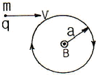
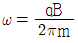
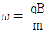
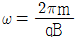
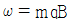
(정답률: 알수없음)
2과목: 회로이론
21. 다음 그림에서 Vab를 구하면 몇 [V] 인가?
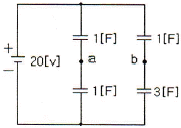
- 2.5[V]
- -2.5[V]
- 5[V]
- -5[V]
(정답률: 알수없음)
22. 다음 그림과 같은 구형파(square wave)의 실효값은?
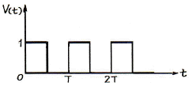
- T/2
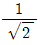
- 1/2
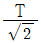
(정답률: 알수없음)
23. 내부저항 r [Ω]인 전원이 있다. 부하 R 에 최대 전력을 공급하기 위한 조건은?
- r = 2R
- R = r
- R = r2
- R = r3
(정답률: 알수없음)
24. ABCD 파라미터에서 단락 역방향 전달 임피던스는?
- A
- B
- C
- D
(정답률: 알수없음)
25. 권선비 n : 1인 결합회로에서 구동 임피던스는?
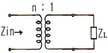
- Zin = nZL
- Zin = n2ZL
- Zin = n2/ZL
- Zin = n/ZL
(정답률: 알수없음)
26. 그림의 회로에서 릴레이의 동작 전류는 10[mA], 코일의 저항은 1[kΩ], 인덕턴스는 L[H]이다. S가 닫히고 18[ms] 이내로 이 릴레이가 작동하려면 L[H]은 약 얼마인가?
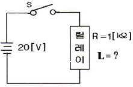
- 26
- 30
- 50
- 68
(정답률: 알수없음)
27. 그림의 π형 4단자망에 있어서의 전송 파라미터 A는?
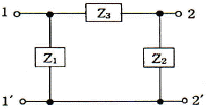
- 1+Z3/Z2
- Z1+Z2+Z3/Z1Z2
- Z3
- 1+Z3/Z1
(정답률: 알수없음)
28. 단위계단함수 u(t-a)의 그림으로 옳은 것은?
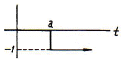
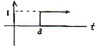
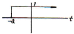
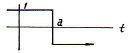
(정답률: 알수없음)
29. R-L-C 직렬 공진회로에서 선택도 Q를 표시하는 식은? (단, ωr 은 공진 각 주파수이다.)
- ωrC/R
- ωrL/R
- ωr/RL
- ωrR/L
(정답률: 알수없음)
30. 다음 그림에 표시한 여파기는?
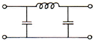
- 고역 여파기
- 대역 여파기
- 대역 소거 여파기
- 저역 여파기
(정답률: 알수없음)
31. 다음 그림과 같은 정저항 회로가 되려면 ωL의 값[Ω]은?
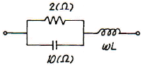
- 1.2
- 1.6
- 0.8
- 0.4
(정답률: 알수없음)
32. 주파수 선택 특성을 높일 수 있는 방법으로 옳은 것은?
- 내부 임피던스가 큰 전원에는 병렬공진 회로를 사용한다.
- 내부 임피던스가 큰 전원에는 직렬공진 회로를 사용한다.
- 내부 임피던스에 관계없이 직렬공진 회로를 사용한다.
- 내부 임피던스에 관계없이 병렬공진 회로를 사용한다.
(정답률: 알수없음)
33. 다음 그림의 교류 회로에서 R에 전류가 흐르지 않기 위한 조건은?
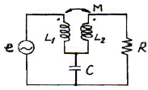
- ωL1 = 1/ωC
- ωL2 = 1/ωC
- ωM = 1/ωC
- ωM = ωL2
(정답률: 알수없음)
34. 그림에서 상자는 저항만으로 구성된 회로망이고, v1 = 20t이고 v2 = 0 일 때 i1 = 5t 및 i2 = 2t 이다. v1 = 20i+40 이고 v2 = 40t+10 일 때 i1 을 구하면?
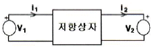
- i1 = -2t [A]
- i1 = t+9 [A]
- i1 = -4-1t [A]
- i1 = 5t+10 [A]
(정답률: 알수없음)
35. RL 직렬회로에 일정한 정현파 전압이 인가되었다. 이때, 인가된 신호원과 저항 및 인덕터에서의 전류 위상 관계를 올바르게 설명한 것은?
- 저항 및 신호원과 인덕터에서의 전류 위상은 모두 동일하다.
- 저항에서의 전류가 신호원 및 인덕터에서의 전류보다 빠르다.
- 저항과 신호원에서의 전류가 인덕터에서의 전류보다 빠르다.
- 인덕터에서의 전류가 저항 및 신호원에서의 전류보다 빠르다.
(정답률: 알수없음)
36. sinωt로 표시된 정현파의 라플라스 변환을 바르게 나타낸 것은?
- ω/S+ω2
- ω/S2+ω2
- 1/S2+ω2
- 1/S+ω
(정답률: 알수없음)
37. RC 직렬회로에서 t = 2RC 일 때 콘덴서 방전 전압은 충전 전압의 약 몇 [%]가 되는가?
- 13.5
- 36.7
- 63.3
- 86.5
(정답률: 알수없음)
38. 다음 그림의 라플라스(Laplace) 변환은?
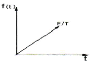
- E/S2
- E/TS
- E/TS2
- TE/S
(정답률: 알수없음)
39. 다음과 같은 회로의 용량성 리액턴스 XC[Ω]는?
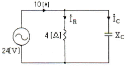
- 1[Ω]
- 2[Ω]
- 3[Ω]
- 4[Ω]
(정답률: 알수없음)
40. R-L-C 직렬회로가 유도성 회로일 때의 설명이 옳은 것은?
- 전류는 전압보다 뒤진다.
- 전류는 전압보다 앞선다.
- 전류와 전압은 동위상이다.
- 공진이 되어 지속적으로 발진한다.
(정답률: 알수없음)
3과목: 전자회로
41. 다음의 2단 연산증폭기의 종합이득(Vo/Vs)은 몇 [dB]인가?
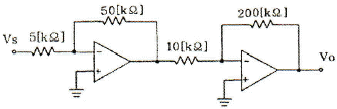
- 26[dB]
- 40[dB]
- 46[dB]
- 52[dB]
(정답률: 알수없음)
42. A급 증폭기에 대한 설명으로 옳지 않은 것은?
- 충실도가 좋다.
- 효율은 50% 이하이다.
- 차단(cut off) 영역 부근에서 동작한다.
- 평균 전력손실이 B급이나 C급에 비해 크다.
(정답률: 알수없음)
43. 다음 회로에서 제너 다이오드에 흐르는 전류는? (단, 제너 다이오드의 제너 전압은 10[V]이다.)
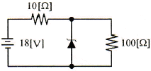
- 0.6[A]
- 0.7[A]
- 0.8[A]
- 1.2[A]
(정답률: 알수없음)
44. 다음과 같은 다이오드 회로에서 정현파 교류입력 Vi가 인가되면 출력은? (단, 교류 입력의 진폭은 Vm＞Vr 임)
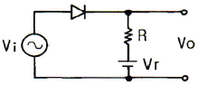
- Vo ≧ Vr
- Vo ≦ Vr
- Vo ≧ -Vr
- -Vr ≦ Vo ≦ Vr
(정답률: 알수없음)
45. 다음 중 정현파 발진기가 아닌 것은?
- LC 하틀리 발진기
- LC 동조형 반결합 발진기
- 이상형 발진기
- 블로킹 발진기
(정답률: 알수없음)
46. 다음 회로에서 R1 = 10[kΩ], R2 = 1[kΩ]일 때 궤환율 β는 약 얼마인가?
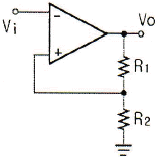
- 0.09
- 0.2
- 0.8
- 0.91
(정답률: 알수없음)
47. 어떤 증폭기에서 입력전압이 0.25[V]일 때 출력전압이 25[V]이다. 이 증폭기 출력의 9[%]를 입력으로 부궤환시킬 때 출력전압은 약 몇 [V] 인가?
- 1.5[V]
- 2.5[V]
- 3.2[V]
- 4.2[V]
(정답률: 알수없음)
48. fτ 가 10[MHz]인 트랜지스터가 중간영역에서 전압이득이 26[dB]인 증폭기로 사용될 때 이상적으로 이룰 수 있는 대역폭은 약 몇 [kHz] 인가?
- 50[kHz]
- 193[kHz]
- 385[kHz]
- 500[kHz]
(정답률: 알수없음)
49. 다음과 같은 연산증폭기의 출력전압(Vo)으로 가장 적합한 것은?
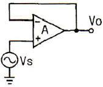
- Vo = 0
- Vo = AㆍVs
- Vo = Vs
- Vo = 1
(정답률: 알수없음)
50. 다음의 증폭기 바이어스 방법 중에서 고조파 성분을 많이 포함하고 있어 주파수 체배기에도 사용되며 효율이 가장 좋은 것은?
- A급
- AB급
- B급
- C급
(정답률: 알수없음)
51. 다음과 같은 특성곡선을 갖는 트랜지스터에서 A급으로 작동할 때 근사적인 β값은 얼마인가?
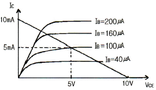
- 10
- 25
- 50
- 100
(정답률: 알수없음)
52. 다음 회로에서 VCE는 약 몇 [V] 인가? (단, βCC는 150 이다.)
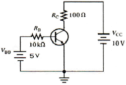
- 2.2[V]
- 3.6[V]
- 5.6[V]
- 6.5[V]
(정답률: 알수없음)
53. IDSS = 25[mA], VGS(Off) = 15[V]인 p채널 JFET가 자기바이어스 되는데 필요한 Rs 값은 약 몇 [Ω] 인가? (단, VGS는 5[V]이다.)
- 320[Ω]
- 450[Ω]
- 630[Ω]
- 870[Ω]
(정답률: 알수없음)
54. 다음과 같은 회로에 입력으로 정현파를 인가했을 때 출력파형으로 가장 적합한 것은? (단, 연산증폭기 및 제너 다이오드는 이상적이다.)
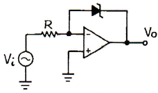
- 구형파형
- 정현파형
- 톱니파형
- 램프파형
(정답률: 알수없음)
55. 수정발진기의 주파수 변동 원인과 그 대책에 대한 설명으로 틀린 것은?
- 동조점의 불안정 - Q가 작은 수정공진자 사용
- 주위온도의 변화 - 항온조 사용
- 부하의 변동 - 완충 증폭기 사용
- 전원전압의 변동 - 정전압회로 사용
(정답률: 알수없음)
56. 다음과 같은 브리지형 발진 회로의 발진 주파수는?
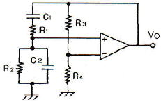
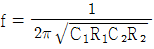
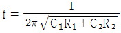
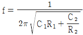
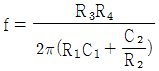
(정답률: 알수없음)
57. 어떤 연산증폭기의 차동이득이 100000 이고 동상이득이 0.2 일 때 동상신호제거비(CMRR)는 몇 [dB] 인가
- 104[dB]
- 114[dB]
- 126[dB]
- 136[dB]
(정답률: 알수없음)
58. 전류 궤환 증폭기의 출력 임피던스는 궤환이 없을 때와 비교하면 어떻게 되는가?
- 감소한다.
- 변화가 없다.
- 증가한다.
- 입력신호의 크기에 따라 증가 또는 감소한다.
(정답률: 알수없음)
59. 5[kHz]의 정현파 신호로 100[MHz]의 반송파를 FM 변조했을 때 최대 주파수편이가 ±65[kHz]이면 점유 주파수 대역폭은 몇 [kHz] 인가?
- 130[kHz]
- 140[kHz]
- 150[kHz]
- 160[kHz]
(정답률: 알수없음)
60. 다음 중 고주파 증폭회로에서 중화회로를 사용하는 이유로 가장 적합한 것은?
- 모터공진 방지
- 자기발진 방지
- 증폭도 저하 방지
- 음 되먹임 방지
(정답률: 알수없음)
4과목: 물리전자공학
61. 물이 담긴 컵 안에 잉크 방울을 떨어뜨렸을 때 잉크가 주변으로 번져나가는 것을 볼 수 있다. 이러한 현상은 입자들이 농도가 높은 곳에서 낮은 곳으로 이동하여 균일하게 분포하려는 성향에 기인하는 것인데 이런 입자의 움직임을 무엇이라 하는가?
- 드리프트
- 확산
- 이동성
- 이온 결합성
(정답률: 알수없음)
62. 길이 10[mm], 이동도 0.16[m2/Vㆍsec]인 N형 Si의 양단에 전압 10[V]를 가했을 때 전자의 속도는?
- 160[m/sec]
- 180[m/sec]
- 16[m/sec]
- 18[m/sec]
(정답률: 알수없음)
63. 트랜지스터가 차단 영역에 있을 때 접합 면에 걸리는 전압은?
- EB 접합 : 정바이어스, CB 접합 : 정바이어스
- EB 접합 : 정바이어스, CB 접합 : 역바이어스
- EB 접합 : 역바이어스, CB 접합 : 역바이어스
- EB 접합 : 역바이어스, CB 접합 : 정바이어스
(정답률: 알수없음)
64. 다음 중 캐리어의 확산 거리에 대한 설명으로 옳은 것은?
- 확산계수와는 무관하다.
- 캐리어의 이동도에만 관계 있다.
- 캐리어의 수명시간에만 관계 있다.
- 캐리어의 수명시간과 이동도에 관계 있다.
(정답률: 알수없음)
65. 다음과 같은 현상을 무엇이라 하는가?
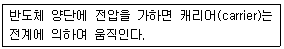
- 드리프트(Drift) 운동
- 산란(Scattering)
- 확산(Diffusion)
- 격자간격
(정답률: 알수없음)
66. 다음 중 정전압용으로 사용되는 다이오드는?
- 리드 다이오드
- 제너 다이오드
- 터널 다이오드
- 온도형 다이오드
(정답률: 알수없음)
67. 다음 반도체의 설명 중 옳지 않은 것은?
- 진성반도체에 불순물 P를 주입하면 페르미 준위 EF가 전도대쪽에 가깝게 위치한다.
- 진성반도체에 불순물 Ga를 주입하면 페르미 준위 EF가 전도대쪽에 가깝게 위치한다.
- 페리미 준이가 전도대 쪽에 가깝게 위치해 있으면 N형 반도체이다.
- 페르미 준위가 금지대 중앙에 위치해 있으면 진성반도체이다.
(정답률: 알수없음)
68. 다음 중 에너지밴드에 속하지 않는 것은?
- 전도대
- 금지대
- 가전자대
- 전기대
(정답률: 알수없음)
69. 금속체 내에 있는 전자가 표면장벽을 넘어서 금속 밖으로 방출되기 위하여 필요한 최소의 에너지를 가리키는 것은?
- 광에너지
- 운동에너지
- 페르미준위
- 일함수
(정답률: 알수없음)
70. 진공 속의 텅스텐(W) 표면에서 전자 1개가 방출하는 데 최소한 몇 Joule의 에너지를 필요로 하는가? (단, 텅스텐의 일 함수는 4.52[eV]이다.)
- 4.52[J]
- 18.127×10-18[J]
- 11.602×10-19[J]
- 7.24×10-19[J]
(정답률: 알수없음)
71. 입자와 파동의 성질을 동시에 갖는 미립자에서 입자의 운동량(P)과 평균 파장(λ) 사이의 관계식이 올바르게 연결된 것은? (단, h 는 프랑크 상수)
- λ = P/h
- λ2 = P/h
- λ = h/P
- λ = Pㆍh
(정답률: 알수없음)
72. 다음 중 페르미-디락(Fermi-Dirac)의 분포함수는?
- f(E) = 1+e(E-Et)/kT
- f(E) = 1/(1+e(E-Et)/kT)
- f(E) = 1-e(E-Et)/kT
- f(E) = 1/(1-e(E-Et)/kT)
(정답률: 알수없음)
73. 쌍극성 접합 트랜지스터(BJT)의 순방향 전류전달비 αF가 0.98일 때 전류이득 βF는?
- 40
- 43
- 46
- 49
(정답률: 알수없음)
74. 접합형 다이오드가 점접촉 다이오드보다 우수한 점으로 옳지 않은 것은?
- 잡음이 적다.
- 전류 용량이 크다.
- 주파수 특성이 좋다.
- 충격에 강하다.
(정답률: 알수없음)
75. 다음 중 반도체의 저항이 온도에 의해 변화하는 소자는?
- Thermistor
- SCR
- TRIAC
- DIAC
(정답률: 알수없음)
76. 반도체에 관한 내용으로 잘못 짝 지워 놓은 것은?
- 홀발진기-자기 효과
- 열전대-지벡 효과
- 전자냉각-펠티어 효과
- 광전도 셀-외부 광전 효과
(정답률: 알수없음)
77. 다음 중 더블 베이스 다이오드(double base diode)라고도 하는 것은?
- 역 다이오드
- 소트키 다이오드
- 바렉터 다이오드
- 유니정션 트랜지스터(UJT)
(정답률: 알수없음)
78. 진성 반도체에 있어서 Fermi 준위의 위치는? (단, Ec는 전도대(conduction band) 중에서 가장 낮은 에너지 준위이고, Ev는 가전대(valence band) 중에서 가장 높은 에너지 준위이다.)
- Ec보다 약간 높다.
- Ec보다 약간 낮다.
- Ev보다 약간 높다.
- Ec와 Ev의 중간 정도이다.
(정답률: 알수없음)
79. PN 접합 다이오드에 순바이어스를 인가할 때 공핍층 근처의 소수캐리어 밀도는 어떻게 변화하는가?
- P영역과 N영역에서 모두 감소한다.
- P영역과 N영역에서 모두 증가한다.
- P영역에서 증가하고, N영역에서 감소한다.
- P영역에서 감소하고, N영역에서 증가한다.
(정답률: 알수없음)
80. 양자(Quantum) 1개의 질량은 약 얼마인가?
- 9.99×10-21[kg]
- 9.109×10-31[kg]
- 1.602×10-19[kg]
- 1.67×10-27[kg]
(정답률: 알수없음)
5과목: 전자계산기일반
81. 주소지정방식(Addressing Mode) 중 유효주소를 구하기 위해 현재 명령어의 주소부의 내용과 PC의 내용을 더하여 결정하는 방식은?
- Direct Addressing
- Indirect Addressing
- Relative Addressing
- Index Register Addressing
(정답률: 알수없음)
82. 디스크에 있는 하나의 데이터 블록을 액세스하는데 걸리는 시간을 계산하는 식으로 옳은 것은?
- 디스크 액세스 시간 = 탐색시간 + 회전지연 시간 + 데이터 전송시간
- 디스크 액세스 시간 = 탐색시간 + 회전지연 시간 - 데이터 전송시간
- 디스크 액세스 시간 = (탐색시간 × 회전지연 시간) + 데이터 전송시간
- 디스크 액세스 시간 = (탐색시간 × 회전지연 시간) - 데이터 전송시간
(정답률: 알수없음)
83. 16비트 컴퓨터 시스템에서 다음과 같은 두 가지의 인스트럭션 형식을 사용한다면 최대 연산자의 수는 얼마인가?
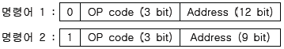
- 36
- 72
- 86
- 512
(정답률: 알수없음)
84. 다음 불 함수를 간단히 하면?
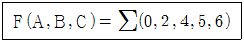
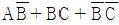
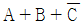
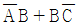
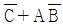
(정답률: 알수없음)
85. 다음 중 BCD 코드 1001에 대한 해밍 코드를 구한 것으로 옳은 것은? (단, 짝수 패리티 체크를 수행한다.)
- 0100101
- 1000011
- 0011001
- 0110010
(정답률: 알수없음)
86. CPU의 수행 상태를 나타내는 주상태(Major State) 중에서 메모리로부터 실행하기 위한 다음 명령의 번지를 결정한 후 메모리로부터 명령을 CPU로 읽어들이는 동작은?
- Fetch 상태
- Indirect 상태
- Execute 상태
- Interrupt 상태
(정답률: 알수없음)
87. 다음 중 두 문자의 비교(compare)에 가장 적합한 논리 연산은?
- AND
- EX-OR
- OR
- NOR
(정답률: 알수없음)
88. 주소 설계시 고려해야 할 사항이 아닌 것은?
- 주소를 효율적으로 나타낼 수 있어야 한다.
- 주소공간과 기억공간을 독립시켜야 한다.
- 사용자에게 사용하기 편리해야 한다.
- 캐시 메모리가 있어야 한다.
(정답률: 알수없음)
89. 메모리 인터리빙(memory interleaving)의 사용 목적은?
- memory의 효율을 높이기 위해서
- CPU의 idle time을 없애기 위해서
- memory의 access 횟수를 줄이기 위해서
- 명령들의 memory access 충돌을 막기 위해서
(정답률: 알수없음)
90. 다음 중 IEEE 754에 대한 설명으로 옳은 것은?
- 고정소수점 표현에 대한 국제 표준이다.
- 가수는 부호 비트와 함께 부호화-크기로 표현된다.
- 0.M×10E의 형태를 취한다.(단, M : 가수, E : 지수)
- 64비트 복수-정밀도 형식의 경우 지수는 10비트이다.
(정답률: 알수없음)
91. 마이크로소프트사에서 Driver 개발을 표준화시키고 호환성을 가지게 하기 위해 만든 드라이버 모델은?
- ISA
- PCI
- OSC
- WDM
(정답률: 알수없음)
92. Booth Algorithm을 설명한 것 중 잘못된 것은?
- 승수 Q의 Q0와 Q-1을 동시에 고려한다.
- 승수 Q-1의 초기값은 항상 0 이다.
- 처리과정 중의 비트의 이동은 항상 산술적 우측시프트로 행해진다.
- 처리과정 속에서는 피승수와 A레지스터 사이에는 덧셈만이 존재한다.
(정답률: 알수없음)
93. ROM 회로의 구성요소로 옳게 짝지어진 것은?
- Decoder, OR gate
- Encoder, OR gate
- Encoder, AND gate
- Decoder, AND gate
(정답률: 알수없음)
94. C 언어 중 모든 면에서 구조체와 같으며 선언 문법이나 사용하는 방법이 같은 것은?
- constant
- array
- union
- pointer
(정답률: 알수없음)
95. 리처드 스톨먼 등에 의해 만들어졌으며, 품질이 매우 좋고 이식성이 좋은 C 컴파일러는?
- GCC
- JAVAC
- YACC
- CC
(정답률: 알수없음)
96. 1024[word]의 RAM은 몇 개의 어드레스 선을 갖는가?
- 4
- 8
- 10
- 12
(정답률: 알수없음)
97. 다음 중 연산장치에 대한 설명으로 옳은 것은?
- 누산기, 가산기, 데이터 레지스터, 상태 레지스터 등으로 구성되어 있다.
- 기억 레지스터, 명령 레지스터, 명령 해독기, 명령 계수기 등으로 구성되어 있다.
- 프로그램과 데이터를 보관하고 있다가 필요할 때 꺼내어 사용하는 기능이다.
- 처리 대상이 되는 데이터와 처리 과정에 있는 데이터 또는 최종 결과를 저장한다.
(정답률: 알수없음)
98. 간접주소 지정방식에 대한 설명으로 옳지 않은 것은?
- 오퍼랜드 필드에 데이터 유효 기억장치 주소가 저장된다.
- 기억장치의 구조 변경 등을 통해 확장이 가능하다.
- 단어 길이가 n 비트라면 최대 2n 개의 기억 장소들을 주소 지정할 수 있다.
- 실행 사이클 동안 두 번의 기억 장치 액세스가 필요하다.
(정답률: 알수없음)
99. CPU를 사용하기 위한 데이터는 주기억장치에 기억된다. 이 경우 데이터를 가져오기 위하여 사용하는 레지스터는?
- IR
- PC
- MBR
- AC
(정답률: 알수없음)
100. 다음 명령 형식 중 데이터의 처리가 누산기(accumulator)에서 이루어지는 형식은?
- 스택 구조 형식
- 1번지 명령 형식
- 2번지 명령 형식
- 3번지 명령 형식
(정답률: 알수없음)
B = μ0 * I / (2πx)
여기서 B는 자기장의 크기, μ0는 자유공간의 유전율, I는 전류, x는 거리를 나타냅니다. 따라서, x에 대한 식으로 정리하면 다음과 같습니다.
x = μ0 * I / (2πB)
여기에 주어진 값들을 대입하면,
x = (4π × 10^-7 T·m/A) × 1 A / (2π × 4 A/m) ≈ 0.5[m]
따라서, 정답은 "0.5[m]"입니다.